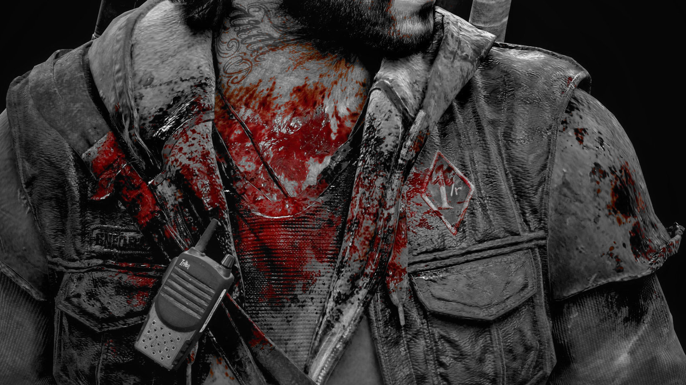

Você tem a habilidade — e a coragem — para sobreviver aos horrores de uma realidade devastada neste jogo de ação e aventura com um mundo aberto imenso? Viaje e lute pelos Estados Unidos num cenário pós-pandêmico e mortífero. Jogue com Deacon St. John, um andarilho e caçador de recompensas que segue um caminho tortuoso, lutando para sobreviver ao mesmo tempo em que busca uma razão para viver.